BIOGRAFIA:
Lewis Hamilton nació el 7 de enero de 1985 en Stevenage, Hertfordshire, Inglaterra. Sus padres lo llamaron Lewis por el atleta estadounidense Carl Lewis. Su madre Carmen es británica y su padre Anthony afrobritánico, cuyos padres se habían trasladado en los años 50 desde Granada hasta el Reino Unido, siendo por tanto Hamilton mulato. Sus padres se separaron cuando tenía dos años, viviendo hasta los doce años con su madre y sus dos medio hermanas maternas mayores,5 y desde entonces con su padre, su madrastra y su medio hermano paterno menor Nicholas, también piloto de carreras. En 1991 su padre le dio un coche teledirigido, y desde entonces empezó a ganar competiciones, incluso contra personas adultas.6 El sueño de Hamilton era convertirse en conductor de la Fórmula 1, por lo que su padre le compró un kart, y en 1993 empezó a competir, de las que ganó varias carreras. Su padre le dijo que apoyaría su carrera siempre y cuando trabajara duro en la escuela. Pero al final Hamilton terminó su relación de trabajo con su padre a principios de 2010 y firmó un acuerdo de gestión en marzo de 2011 con la empresa de Simon Fuller XIX Entertainment. En noviembre de 2014, Hamilton anunció que no renovaría su contrato de gestión con Fuller. Hamilton fue educado en la escuela de John Henry Newman, una escuela secundaria católica. Junto con su interés por las carreras, también destacaba su habilidad como futbolista, jugando en el equipo de la escuela con el centrocampista internacional de Inglaterra Ashley Young. Hamilton dijo que si la Fórmula 1 no hubiera funcionado para él, habría sido futbolista o jugador de cricket. Posteriormente asistió, en febrero de 2001, a la Cambridge Arts and Sciences (CATS), una universidad privada de sexto grado en Cambridge.
COMIENZO EN F1
Mclaren (2007-2012):
2007: Debut con subcampeonato
El 24 de noviembre de 2006, salta la noticia de que Hamilton será fichado por el equipo McLaren para 2007.89 Fernando Alonso sería su compañero y Pedro Martínez de la Rosa el piloto de desarrollo. En su debut en el Gran Premio de Australia, lograría un meritorio tercer puesto, por detrás de Kimi Räikkönen y Fernando Alonso, siendo el primer piloto en llegar al podio en su debut desde que Jacques Villeneuve lo hiciera en el Gran Premio de Australia de 1996. En las dos siguientes carreras finaliza segundo, siendo el primer piloto de la historia en conseguir tres podios consecutivos tras su debut. En el Gran Premio de España, en Montmeló, finaliza quedando en segunda posición y se aúpa al primer puesto del mundial.10 En el Gran Premio de Canadá, Hamilton logró su primera pole position, impresionando nuevamente al mundo de la F1. El 10 de junio, obtiene su primera victoria en Fórmula 1 en el Circuito Gilles Villeneuve, saliendo desde la pole.
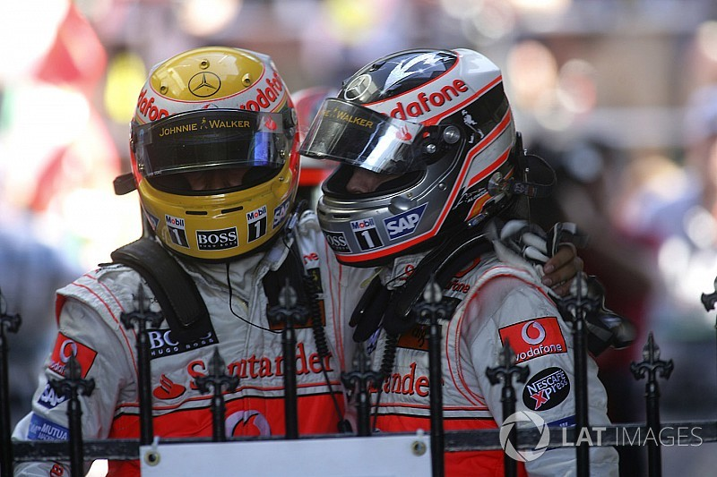2008: El campeón más joven
En su debut en la temporada 2008, Hamilton se anota la pole y el triunfo en Melbourne.17 Sin embargo, en las siguientes carreras, su nivel no es el esperado. En Malasia es sancionado y sufre un error en el pit stop que le relega al quinto puesto. En el GP de Baréin, tras una mala salida, choca con su ex compañero Fernando Alonso, viéndose obligado a cambiar el alerón delantero de su MP4-23 y finalizando 13º. Kimi Räikkönen le arrebató el liderato. En la siguiente prueba, el Gran Premio de España, remonta desde el quinto puesto en la salida hasta la tercera posición. En el Gran Premio de Turquía, Lewis vuelve a demostrar su calidad y acaba segundo, tras protagonizar un gran adelantamiento a Felipe Massa en carrera y disputarse la victoria. En Mónaco, Lewis sobrevive a una accidentada y caótica carrera logrando la victoria y colocándose líder del campeonato. Se proclamó definitivamente campeón en el GP de Brasil, al terminar 5.º en una intensa carrera en la que su máximo rival, Felipe Massa, logró la victoria. En la última vuelta iba sexto, cediendo así el mundial en favor de Felipe Massa; pero en la penúltima curva adelantó a Timo Glock, quien seguía con neumáticos de seco y no pudo bloquear a Lewis, cuando la pista estaba mojada dado que empezó a llover por segunda vez. Según muchos aficionados y expertos en F1, este es el mejor final que han visto en la competición porque el mundial se decidió en poco más de 15 segundos y en una última vuelta emocionante.2223
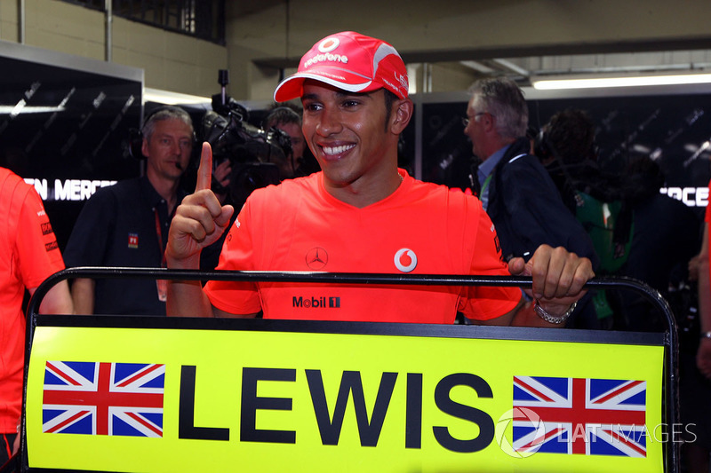2009: Año difícil con remontada final
Hamilton quería revalidar su título este año, pero al igual que el subcampeón de la temporada anterior, Felipe Massa, realiza uno de los peores arranques, al ser descalificado en Melbourne por mentir a los comisarios.24 En una caótica carrera en Malasia, bajo la lluvia, el inglés consigue su primer punto. En China, acaba 6º; y en Baréin, 4º. No obstante, desde Cataluña hasta Nürburgring, Hamilton terminó fuera de los puntos con un coche que no era competitivo, principalmente debido a una ambigua reglamentación emitida por la FIA para el diseño y construcción de los coches de este año, que penalizó a varios equipos acostumbrados al protagonismo, como McLaren, y que más adelante traería apelaciones sobre un polémico doble difusor de aire que se instaló en los monoplazas del equipo Brawn GP.
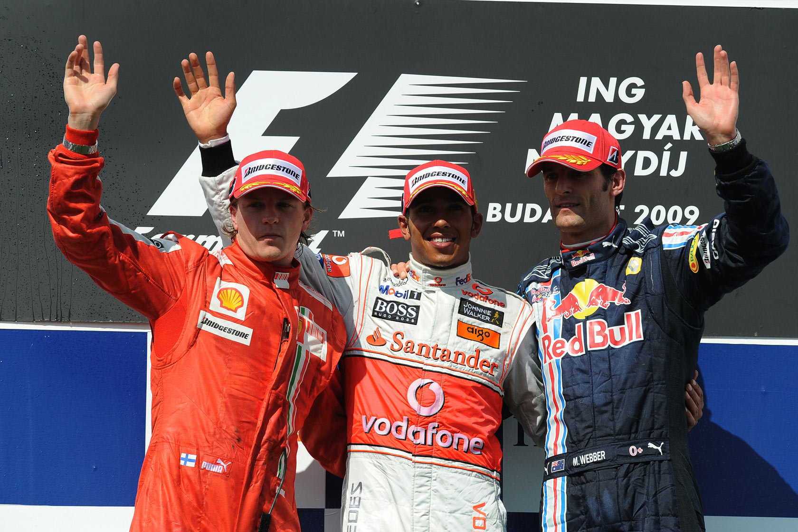2010: Candidato al título pero sin premio
Hamilton esperaba que en 2010 pudiera volver a tener un monoplaza que le permitiera ganar carreras. En Sahkir no lo hace nada mal y se clasifica 4°, en carrera mantuvo la 4° posición hasta que en las vueltas finales con el problema en la bujía de Sebastian Vettel pudo pasarlo y terminar 3°. En Melbourne, Hamilton no pudo pasar a la Q3 y clasificó 11°. En carrera, remontó cuatro posiciones; pero a falta de 2 vueltas, rodando 5° y ya a punto de quitarle el 4° puesto a Fernando Alonso, Mark Webber chocó con Hamilton, pero este pudo seguir y acabó 6°.
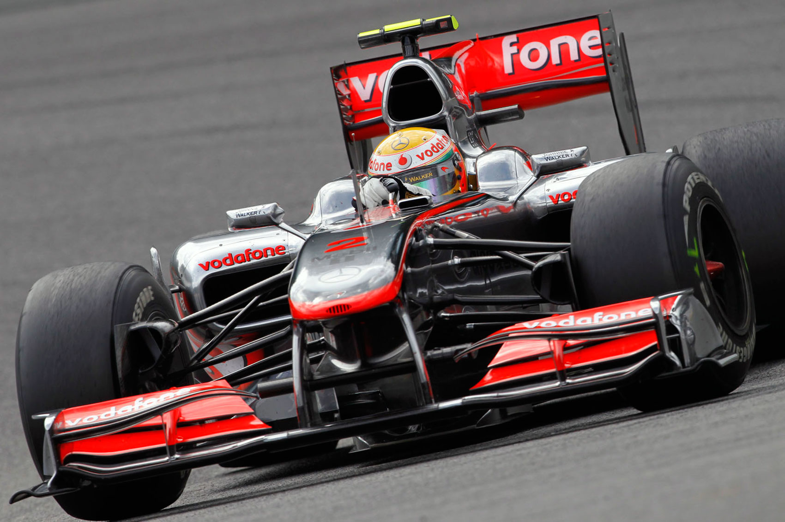2011: Año de los incidentes con Massa
En 2011, Hamilton empezó la temporada en buena forma: logró una victoria y un segundo puesto en las tres primeras carreras. Pero a medida que empezaba la temporada, los resultados de Lewis fueron tornándose irregulares, hasta el punto que por primera vez desde que está en F1 fue superado por su compañero de equipo. Logró una pole y tres victorias en total. Además, este año será recordado por sus rencillas en la pista con Felipe Massa (tuvieron toques o incidentes hasta en seis ocasiones) y por la ruptura sentimental con su pareja, circunstancias que afectaron a sus prestaciones.27 Terminó quinto en el campeonato, muy lejos del campeón Sebastian Vettel.
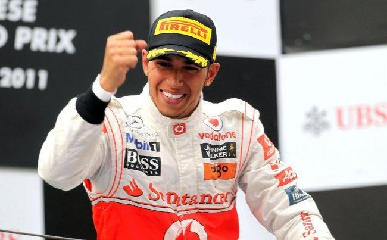2012: Último año en McLaren
Hamilton comienza el 2012 con dos poles y tres podios consecutivos. Luego llegan tres carreras en las que termina octavo en dos ocasiones y en quinta la restante. Finalmente, Lewis logra su primera victoria del año en Canadá, uno de sus circuitos talismanes. Sin embargo, la mala fortuna volvería a perjudicarle, con dos abandonos (un accidente en la penúltima vuelta de Valencia y un pinchazo y una avería en Hockenheim) y un pobre octavo puesto en Silverstone. Hamilton vencería nuevamente en Hungría, por tercera vez en F1; fue arrollado en la salida de Spa y consiguió la tercera victoria del año en Monza. Pero en la gira asiática se terminarían sus opciones al título, con dos nuevos fallos mecánicos en Singapur y Abu Dabi mientras lideraba esas carreras y el resurgir de Red Bull. El 28 de septiembre de 2012, se anuncia que Hamilton correrá con Mercedes las tres próximas temporadas.
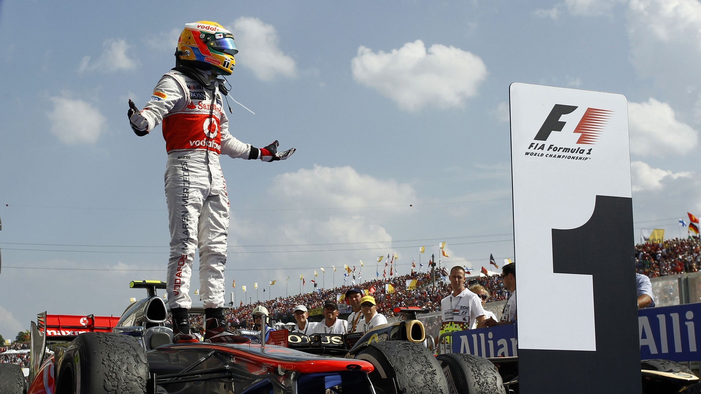MERCEDES (2013-2022)
2013: Debut con las flechas plateadas
Lewis Hamilton comienza el 2013 en la escudería Mercedes AMG F1 Team. El piloto inglés asumía que no iba a ser fácil luchar por el campeonato con la escudería alemana después de sus flojos resultados en los últimos años y esperaba mejorar poco a poco. Acabando el Mundial en la 4.ª plaza con tan solo una victoria y cinco podios, todas ellos durante las once primeras pruebas.
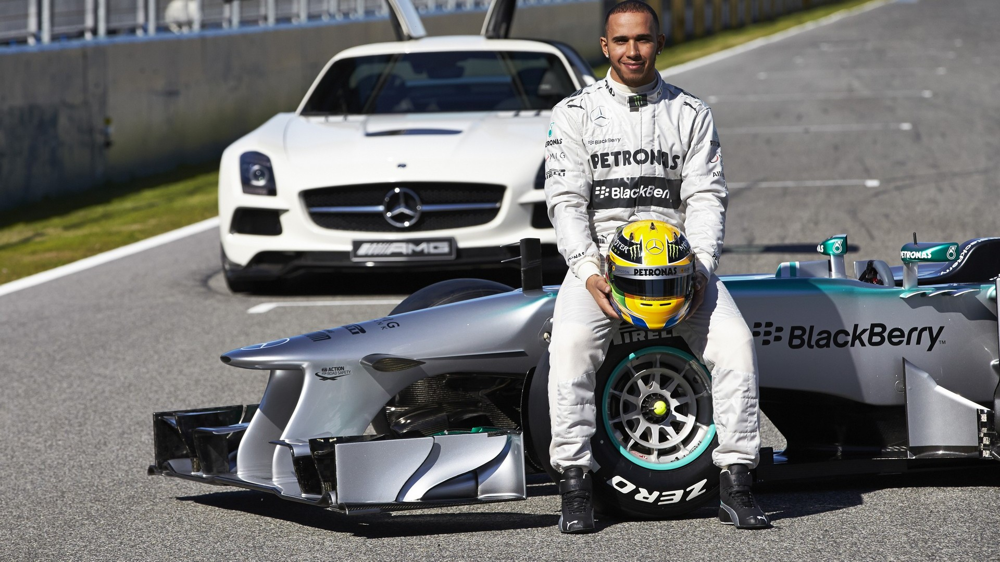2014: Segundo campeonato. Primero con las flechas plateadas
En 2014, Hamilton comienza obteniendo la pole en Australia, pero tuvo que abandonar en carrera en la segunda vuelta por un problema de motor y ganó su compañero Nico Rosberg. Ganó de manera seguida las cuatro fechas siguientes (Malasia, Baréin, China, España) donde obtuvo la pole en todas a excepción de Baréin haciéndose líder del mundial con 3 puntos de ventaja sobre Rosberg. En la gran final en Abu Dabi, donde se otorga doble puntuación a las posiciones puntuables (1º- 10º) clasificó segundo tras varios errores en clasificación. Lewis cruzó la curva 1 primero; a mitad de carrera su compañero Rosberg (segundo en ese momento y a quien le llevaba 17 puntos de ventaja en el campeonato) necesitaba ganar y que Lewis terminara dos posiciones por debajo de la que tenía. Rosberg comenzó a tener problemas en el sistema de recuperación de energía cinética (ERS), que le causó una pérdida de potencia de unos 80 a 40 CV, por lo que se fue retrasando en la parrilla y terminó en la posición 14, mientras Hamilton era amenazado por Massa y su estrategia estuvo a punto de perder el primer lugar, pero no el campeonato ya que le llevaba una vuelta de ventaja a Nico. Hamilton terminó y se consagró campeón del mundo con Mercedes.31 En diciembre de 2014 la BBC lo nombró "deportista del año"
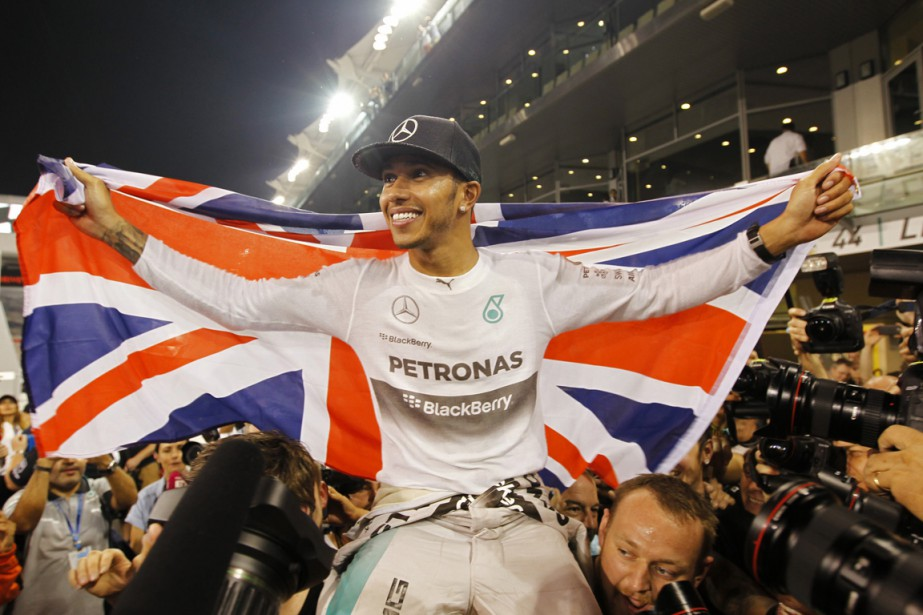2015: Tricampeón con Mercedes
Lewis comenzó la defensa de su corona de la mejor forma posible, ganando con claridad tras salir desde la pole en Australia. En el siguiente Gran Premio de Malasia fue segundo, ya que un auto de seguridad hizo que los Mercedes se metieran en boxes. Vettel continuó, se ahorró una parada y ganó la carrera. Pero Hamilton se recupera en China y Barhein, donde gana de forma clara. El 24 de octubre en Austin, Hamilton logró la pole, y aunque en la carrera tuvo algunos problemas, gracias a un error de Rosberg, Hamilton llegó primero y se coronó tricampeón de Fórmula 1 con Mercedes.
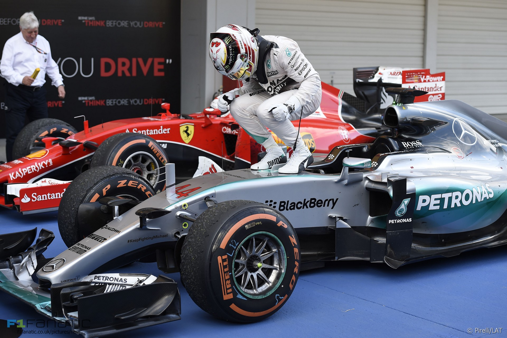2016: Por detrás de Rosberg
Hamilton tuvo muchos errores en las salidas, lo que unido al fallo del motor en Sepang y a que Nico hizo una temporada casi sin errores, no pudiera refrendar su título conseguido en los dos años anteriores.
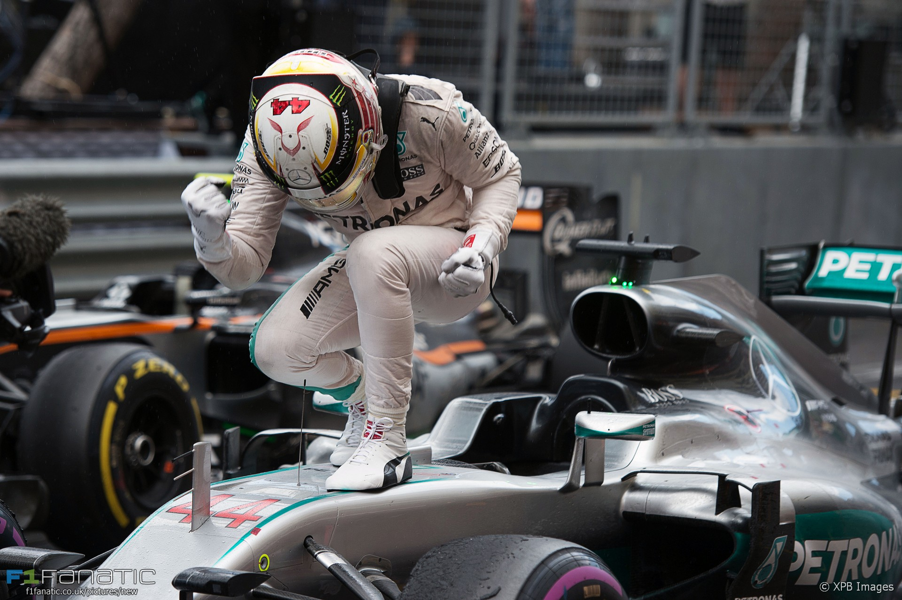2017: Tetracampeón
Esta temporada empezaría consiguiendo un 2º puesto en el GP de Australia, por detrás del que será su rival al título, Sebastian Vettel. Luego del receso veraniego, Hamilton acumuló victorias en Bélgica, Italia, Singapur, Japón y Estados Unidos, además de un segundo puesto en Malasia, mientras que Vettel registró abandonos en Singapur y Japón. De este modo, el británico conquistó su cuarto campeonato mundial en México, con dos fechas de antelación
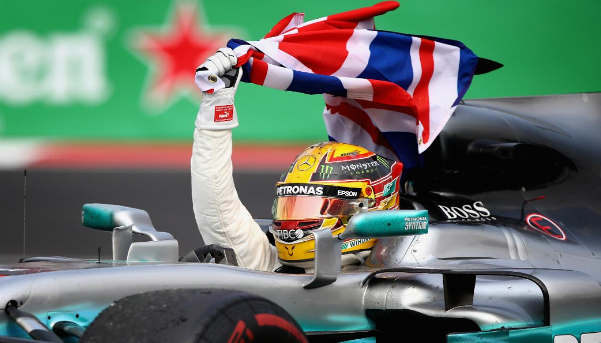2018: Pentacampeón
Un año más comenzó la temporada en el Gran Premio de Australia, con un total de 21 Grandes Premios en esta temporada, lo que es todo un récord. Esta temporada comenzó con varias revoluciones en los monoplazas, como la complementación del Halo como medio para la seguridad. Esto no impidió que de nuevo los hombres de Mercedes fuesen los más rápidos sobre el trazado de Albert Park. Hamilton se adjudicó una nueva pole position, pero debido a un safety car y la estrategia de Ferrari de mantener a Vettel en pista terminó segundo, aunque demostrando un ritmo superior al de Ferrari. El triunfo final llegó en México. Hamilton sufrió de nuevo con los neumáticos, y pese a la segunda posición de Vettel, Hamilton llegó cuarto, y consiguió el pentacampeonato, igualando a Juan Manuel Fangio.36
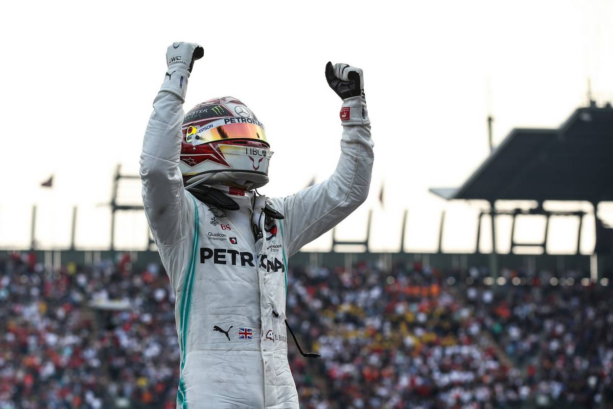2019: Hexacampeón
En 2019, el británico cosechó 11 victorias a lo largo del año que le permitieron lograr su sexto título; el tercero seguido. La temporada la arrancó en Australia con pole, pero en la salida su compañero Valtteri Bottas lo adelantó y Hamilton no lo pudo recuperar el puesto, terminando segundo. En Baréin y China consiguió la victoria a pesar de no partir desde la pole, en Azerbaiyán largo y acabó segundo y en España ganó la carrera largando en el puesto 2, así logrando el quinto doblete del año para Mercedes. En Estados Unidos, a pesar de largar quinto, acabó segundo detrás de Bottas y así Hamilton se consagró Campeón Mundial por tercera vez consecutiva y por sexta vez en su carrera deportiva. Superando así a Juan Manuel Fangio y quedándose a uno del récord de Michael Schumacher. Brasil se convirtió en la cuarta carrera sin podio para Hamilton de la temporada. Largó tercero, llegó a liderar la carrera antes de un auto de seguridad, pero un mal relanzamiento le costó la posición con Verstappen. Más tarde, intentando adelantar a Alexander Albon, lo embistió. Fue tercero en pista pero una sanción por lo anterior lo hizo caer el séptimo puesto. Ganó nuevamente en Abu Dabi, cerrado así una temporada con 11 victorias, 5 pole positions, 6 vueltas rápidas, 17 podios y 413 puntos.
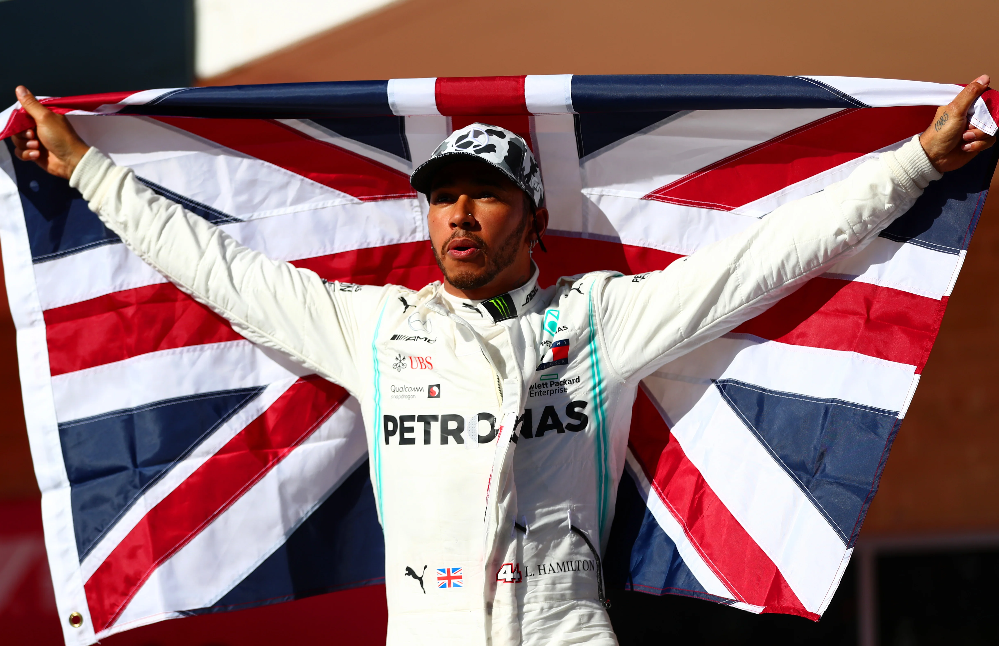2020: Heptacampeón
El 15 de noviembre de 2020 se convirtió en heptacampeón del mundo de F1 matemáticamente38 al lograr la victoria en el Gran Premio de Turquía. El 1 de diciembre de 2020, con 2 carreras para terminar la temporada, su equipo confirmó su positivo por coronavirus,39 quedando fuera de la parrilla de salida del primer Gran Premio de Sakhir de F1.
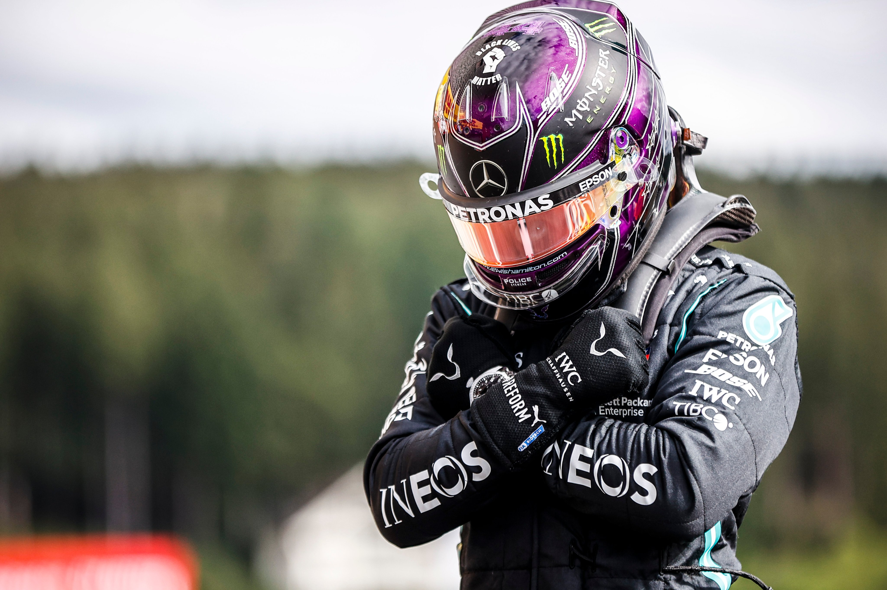2021; Final en la ultima vuelta:
Lewis Hamilton recupero las ansias de ganar su 8o titulo mundial, pero en la ultima cita del mundial, un error del piloto de Williams (latifi), hizo que saliera el coche de seguridad, lo cual provoco que Max Verstappen pusiera nuevos neumaticos e ganar en la ultima vuelta.
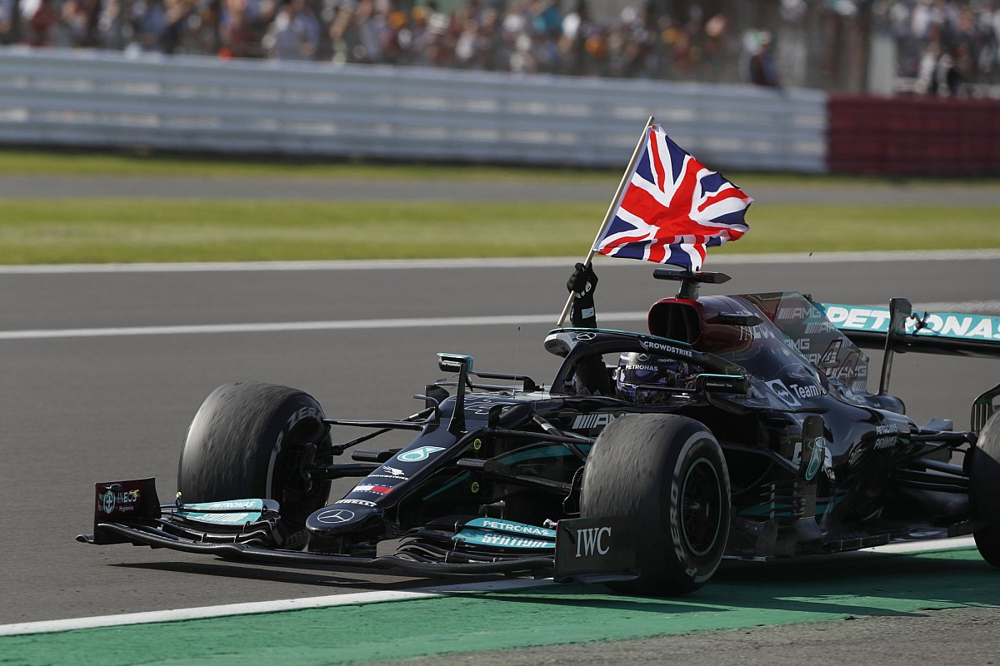